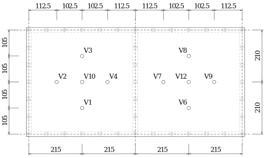
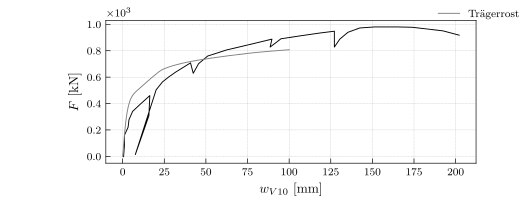

from packages import *Versuchsnachrechnung Zweifeldplatte
Der Abschluss der Modellanwendung bildet die Versuchsnachrechnung der Zweifeldplatte. Dazu ist das Kapitel gegliedert in den Versuchsbeschrieb, die Modellbildung des NLFE-Modells und die Resultate im Vergleich mit den Messgrössen.
Versuchsbeschrieb
Die Zweifeldplatte entstammt aus @thoma_plattenversuche_2010. Es handelt sich um ein grossmasstäbliches Plattenexperiment. Dazu ist eine Stahlbetonplatte auf Ringbalken aufgelegt. Diese wiederum sind auf Mauerwerkswänden gelagert. Belastet ist die Platte mit Zugstangen, verankert im Aufspannboden an Hydraulikzylindern, in den jeweiligen Feldbereichen. Die Zugstangen weisen allesamnt die gleiche Kraftintensität auf. Eine Darstellung des Versuchsaufbaus zeigt die Figure 1.
Der Grundriss und die Längsansicht zeigt die Figure 2. Diese zeigt die Position der Gleitlager, die Position der Zugstangen und die Hauptabmessungen der Platte.
Zum Monitoring des Körpers sind Wegaufnehmer unterhalb der Platte platziert. Die Anordnung ist in der Figure 3 gezeigt. Es wurde nach dem Einbringen des Körpers eine Nullmessung durchgeführt. Die gemessenen Verformungen entsprechen somit ausschliesslich der Deformation des Körpers durch die Belastung mit den Hydraulikzylindern.

Der Versuch ist bis zum Bruch gefahren. Der Bruch erfolgt durch das Zerreissen der oberen Längsbewehrung im mittleren Auflagerberich.
Berechnungsgrössen
Im Folgenden sind die Berechnungsgrössen zum Betonstahl, Beton und der Geometrie aufgelistet. Diese sind allesamt aus dem Versuchsbericht @thoma_plattenversuche_2010.
Betonstahl
Die Platte ist kreuzweise mit einer Biegebewehrung mit Durchmesser 10 mm und einer 150 mm Teilung versehen. Dies gilt für die obere und untere Bewehrung. Am Rand sind Abschlussbügel verlegt. Zudem ist über dem Mittelauflager eine Querkraftbewehrung eingelegt, welche ein Querkraftversagen verhindert. Die Figure 4 zeigt lediglich die Biegebewehrung.
Daraus lassen sich die folgenden Parameter der Biegebewehrung ableiten:
diam_s = 10*un.mm
s = 150*un.mm
a_s = (diam_s**2*np.pi /4 /s).to(un.mm**2/un.m)
put_out(symbolic=True)\[ \begin{aligned} \oslash_{s}& = 10 \ \mathrm{mm} \quad & s& = 150 \ \mathrm{mm} \quad & a_{s}& = \frac{\oslash_{s}^{2} \cdot \pi}{4 \cdot s} = 523.6 \ \frac{\mathrm{mm}^{2}}{\mathrm{m}} \end{aligned} \]
Die Eigenschaften des Betonstahls sind experimentell mit Zugversuchen bestimmt worden. Dabei sind die Angaben zu der Zugfestigkeit, Fliessgrenze, Elastizitätsmodul, Fliessdehnung und Bruchdehnung aus dem Bericht entnommen.
f_su = 558.6*un.N/un.mm**2
f_sy = 445.6*un.N/un.mm**2
E_s = 196.5*un.kN/un.mm**2
eps_sy = (f_sy / E_s).to(un.permille)
eps_su = 80.8*un.permille
put_out(symbolic=True)\[ \begin{aligned} f_{su}& = 558.6 \ \frac{\mathrm{N}}{\mathrm{mm}^{2}} \quad & f_{sy}& = 445.6 \ \frac{\mathrm{N}}{\mathrm{mm}^{2}} \quad & E_{s}& = 196.5 \ \frac{\mathrm{kN}}{\mathrm{mm}^{2}} \\ \varepsilon_{sy}& = \frac{f_{sy}}{E_{s}} = 2.27 \ \mathrm{‰} \quad & \varepsilon_{su}& = 80.8 \ \mathrm{‰} \quad & \end{aligned} \]
Beton
Ebenso wurde der verwendete Beton experimentell untersucht. Im Bericht sind Angaben zu der Zylinderdruckfestigkeit und dem Elastizitätsmodul beschrieben.
f_cc = 28.61*un.N/un.mm**2
E_c = 22.9*un.kN/un.mm**2
put_out(symbolic=True, rows = 3)\[ \begin{aligned} f_{cc}& = 28.61 \ \frac{\mathrm{N}}{\mathrm{mm}^{2}} \quad & E_{c}& = 22.9 \ \frac{\mathrm{kN}}{\mathrm{mm}^{2}} \quad & \end{aligned} \]
Basierend auf empirischen Ansätzen lässt sich eine Bauteilfestigkeit und die Betonzugfestigkeit bestimmen. Zudem ist die Annahme der Betonbruchstauchung aufgezeigt.
f_c = (2.7* f_cc.m**(2/3))*un.N/un.mm**2
f_ct = (0.3* f_cc.m**(2/3))*un.N/un.mm**2
eps_cu = 5.*un.permille
put_out(symbolic=True, rows = 3)\[ \begin{aligned} f_{c}& = 2.7 \cdot f_{cc}^{\frac{2}{3}} = 25.26 \ \frac{\mathrm{N}}{\mathrm{mm}^{2}} \quad & f_{ct}& = 0.3 \cdot f_{cc}^{\frac{2}{3}} = 2.81 \ \frac{\mathrm{N}}{\mathrm{mm}^{2}} \quad & \varepsilon_{cu}& = 5.0 \ \mathrm{‰} \end{aligned} \]
Geometrie
Die Plattenstärke und die Bewehrungsüberdeckung sind folgend beschrieben.
h = 200*un.mm
c_nom = 20*un.mm
put_out()\[ \begin{aligned} h& = 200 \ \mathrm{mm} \quad & c_{nom}& = 20 \ \mathrm{mm} \quad & \end{aligned} \]
Versuchsergebnisse
Aus dem Versuchsbericht geht die Traglast und ein Last-Verformungs-Diagramm hervor. Die Traglast beträgt 978 kN pro Feld. Dies entspricht der Summe der einzelnen Hydraulikzylindern pro Feld. Die folgende Beziehung beschreibt die Traglast pro Zylinder.
Q_u = 978*un.kN / 12
put_out(symbolic=True)\[ \begin{aligned} Q_{u}& = \frac{978}{12} = 81.5 \ \mathrm{kN} \quad & \quad & \end{aligned} \]
Das Last-Verformungs-Diagramm zeigt die Figure 5. Auf der Ordinate ist die Summe der Einzelkräfte pro Feld aufgezeigt und auf der Abszisse die Verformung der Feldmitte. Die exakte Position der Messung \(V10\) ist in der Figure 5 gezeigt.
DF_res_V10 = pd.read_csv('imgs/tho_res_V10.csv')NLFE-Modell
Dieser Abschnitt beschreibt die Modellbildung des nicht-linearen FE-Modells. Es sind die Systemmodellbildung die Querschnittsmodellbildung, das Abbruchkriterium und die Resultate des Modells beschrieben.
Systemmodellbildung
Die Figure 6 zeigt den Trägerrost mit den Auflagern, den Doppelgelenken, den starren Stäben, sowie sind an den Positionen der Zugstangen Einzellasten eingeführt. Die Abbildung ist lediglich schematisch, da eine deutlich feinere Elementlänge gewählt ist, als dargestellt.
Die Elementlänge ist die folgende. Diese ist so gewählt, dass die Position der asymmetrisch angeordneten Einzellasten auf die Knoten zu liegen kommt. Zudem gibt es keine Längenunterschiede der Stäbe im Bereich des Mittelauflagers. Bei einer durchwegs gleichen Rostteilung sind die Gelenkbeziehungen für sämtliche Stabend- und Anfangsgelenke identisch. Dies reduziert den Modellierungsaufwand und vermindert Modellierungsfehler.
l_El = 0.10*un.m
l_Ein = l_El / 2
put_out(symbolic=True)\[ \begin{aligned} l_{El}& = 0.1 \ \mathrm{m} \quad & l_{Ein}& = \frac{l_{El}}{2} = 0.05 \ \mathrm{m} \quad & \end{aligned} \]
Q_NLFE = 100 *un.kNQuerschnittsmodellbildung
Die Querschnittsmodellbildung zeigt zunächst die Vereinfachung der Materialeigenschaften. Danach folgt die Ermittlung der Ersatzbiegesteifigkeit und die Ersatztorsionssteifigkeit.
Baustoffe
Die Modellierung der Baustoffe beinhaltet die Spannungs-Dehnungs-Beziehung des Betonstahls und des Betons. Die Figure 7 a) zeigt das Verhalten für den Betonstahl B500B. Grau hinterlegt ist der Spannungs-Dehnungs-Verlauf aus den Zugproben.
DF_b500b = pd.read_csv('imgs/tho_stress_strain_b500b.csv')
DF_b500b['x'] = DF_b500b['x']/100
Für den Beton gilt die Beziehung in Figure 7 b). Das Spannungs-Dehnungs-Verhalten des Betons zeigt ein linear elastisches ideal plastisches Verhalten. Zudem zeigt die Darstellung die Berücksichtigung der Betonzugfestigkeit.
Ersatzbiegesteifigkeit
Im ?@sec-qs_platte ist die Ermittlung der Ersatzbiegesteifigkeit aufgezeigt. Die Biegesteifigkeit lässt sich am Stabquerschnitt mit der entsprechenden Streifenbreite bestimmen. Die Streifenbreite entspricht dabei der Elementlänge.
b = l_El
put_out(symbolic=True)\[ \begin{aligned} b& = l_{El} = 0.1 \ \mathrm{m} \quad & \quad & \end{aligned} \]
Nach dem ?@sec-qs_balken ist zunächst das Rissmoment und die Risskrümmung zu bestimmen. Es resultieren die folgenden Grössen.
z = h - 2/3 * h/2
F_c = (h/2 * f_ct * b *1/2).to(un.kN)
M_r = (F_c * z).to(un.kNm)
chi_r = (f_ct/E_c /(h/2)).to(1/un.km)
put_out(symbolic=True, evaluate=True, rows = 2)\[ \begin{aligned} z& = \frac{2 \cdot h}{3} = 133.33 \ \mathrm{mm} \quad & F_{c}& = \frac{b \cdot f_{ct} \cdot h}{4} = 14.03 \ \mathrm{kN} \\ M_{r}& = F_{c} \cdot z = 1.87 \ \mathrm{kNm} \quad & \chi_{r}& = \frac{2 \cdot f_{ct}}{E_{c} \cdot h} = 1.23 \ \frac{1}{\mathrm{km}} \end{aligned} \]
Das Fliessen der Bewehrung zeigt den zweiten aussagekräftigen Punkt im Momenten-Krümmungs-Diagramm. Die Querschnittsanalyse dazu zeigt die ?@fig-tho_qs_my. Die Anwendung der ?@eq-gerissene_steifigkeit_balken liefert die folgenden Grössen.
d_apos = h - c_nom - diam_s / 2
n = E_s / E_c
A_s = a_s*b
rho = A_s / (b*d_apos)
put_out(symbolic=True, rows = 2)\[ \begin{aligned} {d}'& = h - c_{nom} - \frac{\oslash_{s}}{2} = 175.0 \ \mathrm{mm} \quad & n& = \frac{E_{s}}{E_{c}} = 8.58 \ \\ A_{s}& = a_{s} \cdot b = 52.36 \ \mathrm{mm}^{2} \quad & \rho& = \frac{A_{s}}{b \cdot {d}'} = 2.99 \ \frac{\mathrm{mm}}{\mathrm{m}} \end{aligned} \]
Daraus bestimmt sich das Fliessmoment und der Biegewiderstand.
x = (d_apos *(np.sqrt((rho * n)**2 + 2 *rho*n) - rho*n)).to(un.mm)
M_y = (A_s * f_sy *(d_apos-x/3)).to(un.kNm)
EI_II = A_s * E_s * (d_apos - x ) *(d_apos-x/3)
put_out(symbolic=True, rows = 1)\[ \begin{aligned} x& = {d}' \cdot \left(\sqrt{\left(\rho \cdot n\right)^{2} + 2 \cdot \rho \cdot n} - \rho \cdot n\right) = 35.42 \ \mathrm{mm} \\ M_{y}& = A_{s} \cdot f_{sy} \cdot \left({d}' - \frac{x}{3}\right) = 3.81 \ \mathrm{kNm} \\ EI_{II}& = A_{s} \cdot E_{s} \cdot \left({d}' - x\right) \cdot \left({d}' - \frac{x}{3}\right) = 234371009.38 \ \mathrm{kN} \cdot \mathrm{mm}^{2} \end{aligned} \]
Abschliessend ist der Zustand \(II\) mit der Krümmungsdifferenz nach Marti verfeinert um die Zugversteifung zu berücksichtigen. Die Krümmungsdifferenz ist die folgende.
lamda = 1
Delta_chi = ((lamda/2) * (M_r / EI_II - f_ct/(E_c*(d_apos-x)))).to(1/un.km)
put_out(symbolic=True, rows = 1)\[ \begin{aligned} \lambda& = 1 \\ \Delta_{\chi}& = \frac{\lambda \cdot \left(\frac{M_{r}}{EI_{II}} - \frac{f_{ct}}{E_{c} \cdot \left({d}' - x\right)}\right)}{2} = 3.55 \ \frac{1}{\mathrm{km}} \end{aligned} \]
Der Zustand \(II\) ist durch die beiden Krümmungen bestimmt.
chi_y1 = (M_r / EI_II - Delta_chi).to(1/un.km)
chi_y2 = (M_y / EI_II - Delta_chi).to(1/un.km)
put_out(symbolic=True, rows=1)\[ \begin{aligned} \chi_{y1}& = \frac{M_{r}}{EI_{II}} - \Delta_{\chi} = 4.43 \ \frac{1}{\mathrm{km}} \\ \chi_{y2}& = \frac{M_{y}}{EI_{II}} - \Delta_{\chi} = 12.69 \ \frac{1}{\mathrm{km}} \end{aligned} \]
Abschliessend lässt sich der Biegewiderstand bestimmen. Dem Beton ist das vollständige Plastifizieren vorausgesetzt. Die Figure 8 zeigt den Querschnitt, die Dehnungsebene und die Spannungen des Zustands.
Mit der gewählten Dehnung lässt sich die Betonstahlspannung bestimmen. Diese ist kleiner als die Zugfestigkeit des Betonstahls.
eps_s = 62.5*un.permille
sigma_s = np.interp(eps_s.to(un.los), strain_b500b_array, stress_b500b_array).to(un.N/un.mm**2)
f_su
put_out()\[ \begin{aligned} \varepsilon_{s}& = 62.5 \ \mathrm{‰} \quad & \sigma_{s}& = 532.27 \ \frac{\mathrm{N}}{\mathrm{mm}^{2}} \quad & f_{su}& = 558.6 \ \frac{\mathrm{N}}{\mathrm{mm}^{2}} \end{aligned} \]
Mit der gewählten Stahldehnung stellt sich die folgende Druckzone und die Betonstauchung ein. Die Betonstauchung ist annähernd gleich der Betonbruchstauchung.
x = ((A_s*sigma_s) / (f_c*b*0.85)).to(un.mm)
eps_c = (eps_s / (d_apos - x) * x).to(un.permille)
eps_cu
put_out(symbolic=True, rows = 1)\[ \begin{aligned} x& = \frac{A_{s} \cdot \sigma_{s}}{f_{c} \cdot b \cdot 0.85} = 12.98 \ \mathrm{mm} \\ \varepsilon_{c}& = \frac{\varepsilon_{s} \cdot x}{{d}' - x} = 5.01 \ \mathrm{‰} \\ \varepsilon_{cu}& = 5.0 \ \mathrm{‰} \end{aligned} \]
Dabei ist der Biegewiderstand der folgende.
z = d_apos - 0.425*x
F_s = (A_s * sigma_s).to(un.kN)
M_u = (F_s * z).to(un.kNm)
put_out(symbolic=True, rows = 1)\[ \begin{aligned} z& = {d}' - 0.425 \cdot x = 169.48 \ \mathrm{mm} \\ F_{s}& = A_{s} \cdot \sigma_{s} = 27.87 \ \mathrm{kN} \\ M_{u}& = F_{s} \cdot z = 4.72 \ \mathrm{kNm} \end{aligned} \]
Der Biegewiderstand ist mittels der Bruchdehnung des Betons begrenzt. Abschliessend ist die Bruchkrümmung zu bestimmen. Dazu findet das Zuggurtmodell mit der ?@eq-bruchkrummung Anwendung. Die Schubspannung des Verbunds und der Rissabstand sind die folgenden.
tau_b1 = f_ct
s_r = s
put_out(symbolic=True)\[ \begin{aligned} \tau_{b1}& = f_{ct} = 2.81 \ \frac{\mathrm{N}}{\mathrm{mm}^{2}} \quad & s_{r}& = s = 150 \ \mathrm{mm} \quad & \end{aligned} \]
Setzt man beim Riss die Zugfestigkeit voraus, stellt sich der Spannungsverlauf und Dehnungsverlauf gemäss der Figure 9 ein.
Die Spannungen sind folgend berechnet.
sigma_1_s = f_su
sigma_2_s = sigma_1_s - 4 * tau_b1 * s_r / (diam_s * 2)
put_out(symbolic=True, rows = 1)\[ \begin{aligned} \sigma_{1 s}& = f_{su} = 558.6 \ \frac{\mathrm{N}}{\mathrm{mm}^{2}} \\ \sigma_{2 s}& = \sigma_{1 s} - \frac{4 \cdot \tau_{b1} \cdot s_{r}}{\oslash_{s} \cdot 2} = 474.41 \ \frac{\mathrm{N}}{\mathrm{mm}^{2}} \end{aligned} \]
Die mittlere Dehnung lässt sich folgendermassen bestimmen.
E_sh = ((f_su - f_sy) / (eps_su - eps_sy)).to(un.N /un.mm**2)
eps_sm = eps_sy - tau_b1 * s_r / ( E_sh* diam_s) + (f_su - f_sy) / E_sh
put_out(symbolic= True)\[ \begin{aligned} E_{sh}& = \frac{f_{su} - f_{sy}}{\varepsilon_{su} - \varepsilon_{sy}} = 1438.9 \ \frac{\mathrm{N}}{\mathrm{mm}^{2}} \quad & \varepsilon_{sm}& = \varepsilon_{sy} - \frac{\tau_{b1} \cdot s_{r}}{E_{sh} \cdot \oslash_{s}} + \frac{f_{su} - f_{sy}}{E_{sh}} = 51.55 \ \mathrm{‰} \quad & \end{aligned} \]
Mit der mittleren Dehnung lässt sich die Bruchkrümmung beim Betonstahlversagen bestimmen. Es ist ebenfalls gezeigt, dass die Bruchkrümmung bei einem Betondruckversagen grösser ist. Es resultiert folglich ein Betonstahlversagen.
chi_us = (eps_sm / (d_apos - x ) - eps_sy/ (d_apos -x )).to(1/un.km)
chi_uc = (eps_cu / x - eps_sy/ (d_apos -x )).to(1/un.km)
put_out(symbolic=True,rows=2, evaluate=True)\[ \begin{aligned} \chi_{us}& = \frac{\varepsilon_{sm}}{{d}' - x} - \frac{\varepsilon_{sy}}{{d}' - x} = 304.15 \ \frac{1}{\mathrm{km}} \quad & \chi_{uc}& = \frac{\varepsilon_{cu}}{x} - \frac{\varepsilon_{sy}}{{d}' - x} = 371.16 \ \frac{1}{\mathrm{km}} \end{aligned} \]
Damit sind sämtliche Grössen der Momenten-Krümmungs-Beziehung bestimmt. Diese ist in der ?@fig-m_chi_tho a) beschrieben. Die ?@fig-m_chi_tho b) zeigt die Momenten-Verdrehungs-Beziehung, welche sich anhand der ?@eq-phi_to_chi_konst bestimmt.
chi_i = np.array([chi_r.m, chi_y1.m, chi_y2.m, chi_us.m])/un.km
varphi_i = (chi_i * l_Ein)
put_out(symbolic=True)\[ \begin{aligned} \chi_{i}& = \left[\begin{matrix}\chi_{r}\\\chi_{y1}\\\chi_{y2}\\\chi_{us}\end{matrix}\right] = \left[\begin{matrix}1.23\\4.43\\12.69\\304.15\end{matrix}\right] \ \frac{1}{\mathrm{km}} \quad & \varphi_{i}& = \chi_{i} \cdot l_{Ein} = \left[\begin{matrix}0.06\\0.22\\0.63\\15.21\end{matrix}\right] \ \frac{\mathrm{m}}{\mathrm{km}} \quad & \end{aligned} \]
Die bestimmte Gelenkbeziehung gilt für sämtliche Gelenke, unabhängig der globalen Ausrichtung, sowie für positive und negative Biegebeanspruchungen.

Abbruchkriterium
Das Abbruchkriterium betrachtet die Summe der relativen Gelenkrotationen innerhalb der Länge des plastischen Gelenks gemäss der ?@eq-abbruchkriterium. Die Länge des plastischen Gelenks und die maximale plastische Rotation zeigen die folgenden Gleichungen.
# Annahme für die Länge des Gelenks
l_pl = 2 * d_apos
# Verformungsvermögen
varphi_max = (l_pl * chi_us).to(un.rad)
put_out(symbolic=True, rows = 1, precision = 3)\[ \begin{aligned} l_{pl}& = 2 \cdot {d}' = 350.0 \ \mathrm{mm} \\ \varphi_{max}& = l_{pl} \cdot \chi_{us} = 0.106 \ \mathrm{rad} \end{aligned} \]
Die Definition des Abbruchkriteriums ist bei der Anwendung am Zweifeldträger in der ?@fig-jag_abbruchkrit illustriert.
Drillsteifigkeit
Das Torsionsträgheitsmoment für einen Rechteckquerschnitt approximiert:
I_x = (h * b**3 / 3 * (1 - 192*b/ (np.pi**5*h)*np.tanh(np.pi*h / (2*b)))).to(un.mm**4)
I_recht = (h**3 * b / 3 ).to(un.mm**4)
Delta_I = I_recht / I_x
put_out(symbolic=True, rows = 1)\[ \begin{aligned} I_{x}& = \frac{h \cdot b^{3} \cdot \left(1 - \frac{192 \cdot b \cdot \tanh{\left(\frac{\pi \cdot h}{2 \cdot b} \right)}}{\pi^{5} \cdot h}\right)}{3} = 45830943.98 \ \mathrm{mm}^{4} \\ I_{recht}& = \frac{h^{3} \cdot b}{3} = 266666666.67 \ \mathrm{mm}^{4} \\ \Delta_{I}& = \frac{I_{recht}}{I_{x}} = 5.82 \ \end{aligned} \]
Die ungerissene und gerissene Steifigkeit des Querschnitts wird folgend abgeschätzt:
nu = 0.2
G_c = E_c / (2*(1+nu))
GI = (I_x * G_c).to(un.kN*un.m**2)
put_out(symbolic=True, rows = 1)\[ \begin{aligned} \nu& = 0.2 \\ G_{c}& = \frac{E_{c}}{2 \cdot \left(1 + \nu\right)} = 9.54 \ \frac{\mathrm{kN}}{\mathrm{mm}^{2}} \\ GI& = I_{x} \cdot G_{c} = 437.3 \ \mathrm{kN} \cdot \mathrm{m}^{2} \end{aligned} \]
i_xy = h**3 / 6
Gi_xy = i_xy * G_c
put_out(symbolic=True, rows = 1)\[ \begin{aligned} i_{xy}& = \frac{h^{3}}{6} = 1333333.33 \ \mathrm{mm}^{3} \\ Gi_{xy}& = i_{xy} \cdot G_{c} = 12722222.22 \ \mathrm{kN} \cdot \mathrm{mm} \end{aligned} \]
l_El
M_r
1.8708626330708304 kNm
chi_x_r = (M_r/b / Gi_xy).to(1/un.km)
varphi_x_r = (chi_x_r * l_El / 2).to(un.rad)
put_out(symbolic=True, precision = 10)\[ \begin{aligned} \chi_{x r}& = \frac{M_{r}}{b \cdot Gi_{xy}} = 1.4705470478 \ \frac{1}{\mathrm{km}} \quad & \varphi_{x r}& = \frac{\chi_{x r} \cdot l_{El}}{2} = 7.35274e-05 \ \mathrm{rad} \quad & \end{aligned} \]
Und die Steifigkeit des Gelenks beträgt abschliessend:
Als Vergleichswert hier die Plattensteifigkeit gemäss der Plattengleichung.
Resultate
Die Ergebnisse der Berechnung sind hier gezeigt anhand des Last-Verformungs-Diagramms für die Stelle \(V10\).
DF_rost_axis_V10 = pd.read_excel('calc/axis_res.xlsx', sheet_name='V10')
DF_rost_axis_V10['eZ_1 [mm]']= -1*DF_rost_axis_V10['eZ_1 [mm]']
DF_rost_axis_V10_fein = pd.read_excel('calc/axis_res.xlsx', sheet_name='V10_fein')
DF_rost_axis_V10_fein['eZ_1 [mm]']= -1*DF_rost_axis_V10_fein['eZ_1 [mm]']
DF_rost_axis_V10_ohne_zuggurt = pd.read_excel('calc/axis_res.xlsx', sheet_name='V10_ohne_zuggurt')
DF_rost_axis_V10_ohne_zuggurt['eZ_1 [mm]']= -1*DF_rost_axis_V10_ohne_zuggurt['eZ_1 [mm]']
DF_rost_axis_V10_drillweich = pd.read_excel('calc/axis_res.xlsx', sheet_name='V10_drillweich')
DF_rost_axis_V10_drillweich['eZ_1 [mm]']= -1*DF_rost_axis_V10_drillweich['eZ_1 [mm]']
DF_rost_axis_V10_modelliert = pd.read_excel('calc/axis_res.xlsx', sheet_name='V10_axis')
DF_rost_axis_V10_modelliert['eZ_1 [mm]']= -1*DF_rost_axis_V10_modelliert['eZ_1 [mm]']
DF_rost_axis_V10_2x_drill = pd.read_excel('calc/axis_res.xlsx', sheet_name='V10_2x_drill')
DF_rost_axis_V10_2x_drill['eZ_1 [mm]']= -1*DF_rost_axis_V10_2x_drill['eZ_1 [mm]']
ax_res_V10.plot(DF_rost_axis_V10.iloc[:,1], DF_rost_axis_V10.iloc[:,2]*Q_u.to(un.kN).m*12, label='Trägerrost', color='gray')
fig_res_V10.legend()
fig_res_V10.savefig("imgs/tho_res_V10_calc.svg")
# plt.close()
fig_res_V10

Drillsteifigkeit
Ungerissene Drillsteifigkeit
t_sup = 2 * c_nom + diam_s
t_inf = t_sup
d_v = h - (t_sup + t_inf) / 2
G_c
tau_xy_I = f_ct
m_xy_I = (d_v * tau_xy_I * t_sup).to(un.kNm/un.m)
gamma_xy_I_sup = (tau_xy_I / G_c).to(un.rad)
gamma_xy_I_inf = gamma_xy_I_sup
put_out(symbolic=True, rows = 1, precision=4)\[ \begin{aligned} t_{sup}& = 2 \cdot c_{nom} + \oslash_{s} = 50 \ \mathrm{mm} \\ t_{inf}& = t_{sup} = 50 \ \mathrm{mm} \\ d_{v}& = h - \frac{t_{sup} + t_{inf}}{2} = 150.0 \ \mathrm{mm} \\ G_{c}& = \frac{E_{c}}{2 \cdot \left(1 + \nu\right)} = 9.5417 \ \frac{\mathrm{kN}}{\mathrm{mm}^{2}} \\ \tau_{xy I}& = f_{ct} = 2.8063 \ \frac{\mathrm{N}}{\mathrm{mm}^{2}} \\ m_{xy I}& = d_{v} \cdot \tau_{xy I} \cdot t_{sup} = 21.0472 \ \frac{\mathrm{kNm}}{\mathrm{m}} \\ \gamma_{xy I sup}& = \frac{\tau_{xy I}}{G_{c}} = 0.0003 \ \mathrm{rad} \\ \gamma_{xy I inf}& = \gamma_{xy I sup} = 0.0003 \ \mathrm{rad} \end{aligned} \]
Umrechnung auf Stabsystem in Momenten-Verdrehungsbeziehung:
chi_I = ((gamma_xy_I_inf + gamma_xy_I_sup) / d_v).to(1/un.km)
varphi_I = (chi_I * l_El).to(un.rad)
#Faktor zwei da Stab zu Drillsteifigkeit
GK_I = (m_xy_I / chi_I * (1*b * 2) / l_El).to(un.kNm/un.rad)
put_out(symbolic=True, rows = 1, precision=4, evaluate=True)\[ \begin{aligned} \chi_{I}& = \frac{\gamma_{xy I inf} + \gamma_{xy I sup}}{d_{v}} = 3.9215 \ \frac{1}{\mathrm{km}} \\ \varphi_{I}& = \chi_{I} \cdot l_{El} = 0.0004 \ \mathrm{rad} \\ GK_{I}& = \frac{2 \cdot b \cdot m_{xy I}}{\chi_{I} \cdot l_{El}} = 10734.375 \ \frac{\mathrm{kNm}}{\mathrm{rad}} \end{aligned} \]
l_El
l_Einzug = l_El / 2
k_r_com_x = (G_c * h**3 * b / 6 / l_Einzug).to(un.kNm/un.rad)
put_out(symbolic=True)\[ \begin{aligned} l_{El}& = 0.1 \ \mathrm{m} \quad & l_{Einzug}& = \frac{l_{El}}{2} = 0.05 \ \mathrm{m} \quad & k_{r , x}& = \frac{G_{c} \cdot h^{3} \cdot b}{6 \cdot l_{Einzug}} = 25444.44 \ \frac{\mathrm{kNm}}{\mathrm{rad}} \end{aligned} \]
Gerissene Drillsteifigkeit
m_xy_II = 50*un.kNm/un.m
n = E_s / E_c
A_c = (h * b).to(un.mm**2)
A_s = a_s *b
rho_x = (A_s / A_c).to(un.percent)
rho_y = rho_x
tau_xy_y = (m_xy_II / (d_v*t_inf)).to(un.N/un.mm**2)
f_sy
gamma_xy_II_sup = 2*(tau_xy_y / E_s *(np.sqrt((1+n *rho_x) *(1+n*rho_y)/(rho_x*rho_y)) + n)).to(un.rad)
gamma_xy_II_inf = gamma_xy_II_sup
put_out(symbolic=True, rows = 1, precision=4)\[ \begin{aligned} m_{xy II}& = 50.0 \ \frac{\mathrm{kNm}}{\mathrm{m}} \\ n& = \frac{E_{s}}{E_{c}} = 8.5808 \ \\ A_{c}& = h \cdot b = 20000.0 \ \mathrm{mm}^{2} \\ A_{s}& = a_{s} \cdot b = 52.3599 \ \mathrm{mm}^{2} \\ \rho_{x}& = \frac{A_{s}}{A_{c}} = 0.2618 \ \mathrm{\%} \\ \rho_{y}& = \rho_{x} = 0.2618 \ \mathrm{\%} \\ \tau_{xy y}& = \frac{m_{xy II}}{d_{v} \cdot t_{inf}} = 6.6667 \ \frac{\mathrm{N}}{\mathrm{mm}^{2}} \\ f_{sy}& = 445.6 \ \frac{\mathrm{N}}{\mathrm{mm}^{2}} \\ \gamma_{xy II sup}& = \frac{2 \cdot \tau_{xy y} \cdot \left(\sqrt{\frac{\left(1 + n \cdot \rho_{x}\right) \cdot \left(1 + n \cdot \rho_{y}\right)}{\rho_{x} \cdot \rho_{y}}} + n\right)}{E_{s}} = 0.0271 \ \mathrm{rad} \\ \gamma_{xy II inf}& = \gamma_{xy II sup} = 0.0271 \ \mathrm{rad} \end{aligned} \]
chi_II = ((gamma_xy_II_sup + gamma_xy_II_inf) / d_v).to(1/un.m)
#Faktor zwei da Stab zu Drillsteifigkeit
GK_II = (m_xy_II / chi_II * (1 * b * 2 / l_El)).to(un.kNm/un.rad)
put_out(symbolic=True, rows = 1, precision=4)\[ \begin{aligned} \chi_{II}& = \frac{\gamma_{xy II sup} + \gamma_{xy II inf}}{d_{v}} = 0.3611 \ \frac{1}{\mathrm{m}} \\ GK_{II}& = m_{xy II} \cdot \frac{1}{\chi_{II}} \cdot 1 \cdot b \cdot 2 \cdot \frac{1}{l_{El}} = 276.9281 \ \frac{\mathrm{kNm}}{\mathrm{rad}} \end{aligned} \]
M_x_I = b * m_xy_I
M_x_II = b * m_xy_II
varphi_I = M_x_I / GK_I
varphi_II = M_x_II / GK_II
M_x_array = np.array([0, M_x_I.m, M_x_II.m])*un.kNm
phi_x_array = np.array([0, varphi_I.m, varphi_II.m])*un.rad
plt.plot(phi_x_array, M_x_array )c:\Users\Pascal Gitz\miniconda3\envs\calc\Lib\site-packages\matplotlib\cbook.py:1398: UnitStrippedWarning: The unit of the quantity is stripped when downcasting to ndarray.
return np.asarray(x, float)